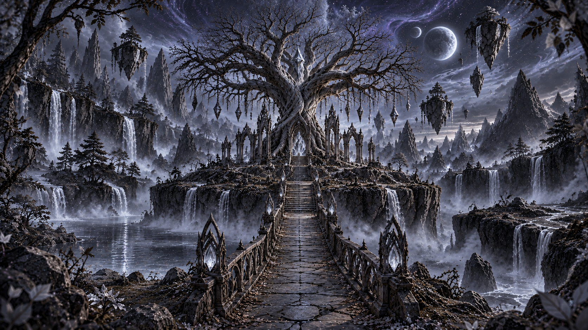
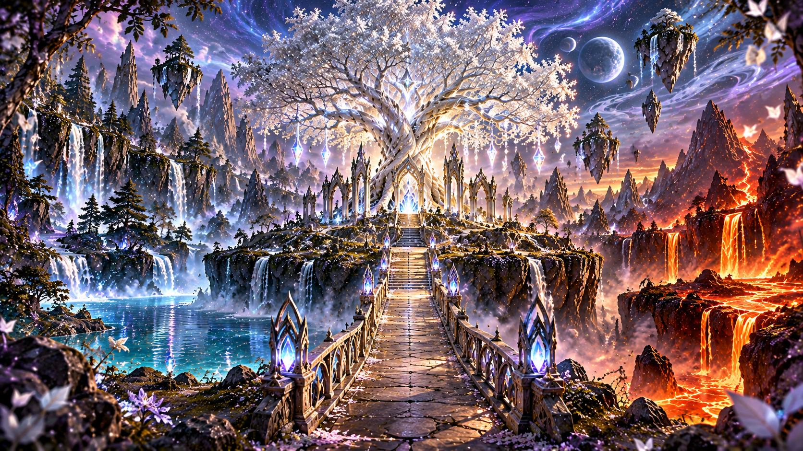
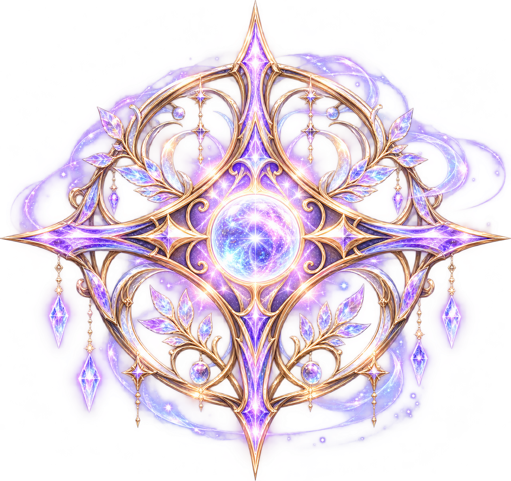

CHAPTER V – THE FIFTH LIGHT
The Heart of Aether
Where the first light was born, only silence remains.


The Silver Stag
The Gift of Aether
The Silver Stag lowers its magnificent antlers. A silver light gathers before you.
"You have restored what was once lost. The Fifth Light now lives within you."

The Mark of Aether
A symbol of unity between Water, Fire, Earth and Wind.
Before you stands the Heart of Aether, once the source of harmony between the four elements.
Its silver branches have withered, its ancient light has faded, and the guardian who once protected this sacred place has vanished.
Yet something within the roots still seems to be waiting...